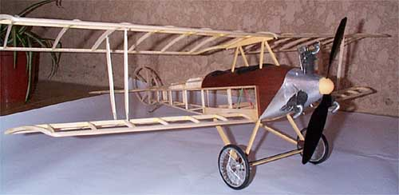
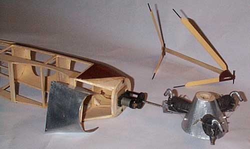
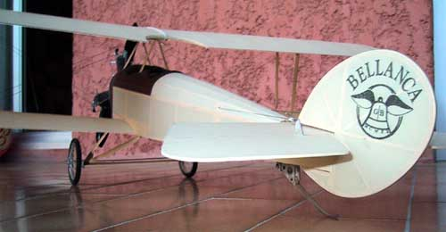

Albatros B1 by Ken Lawrence

|
Ken writes ...
Hi, Thayer!
It’s been a long time, working just a little at a time, but my B.1 is now complete and ready for its maiden flight. Here are some photos for you. Ready-to-fly weight is exactly 18 ounces. I wasn’t happy with my button thread, so I used 50- pound test braided fishing line. It doesn’t stretch, and ties perfect knots. I’d appreciate any feedback you may have on the plane, if you’d like, so that I may maximize its flying.
Thanks again,
Ken Lawrence
AMA 88551
After receiving these photos, I gave Ken a quick call to discuss his project, and he filled in a few more details. He is turning an APC 9x4.7 electric prop with a Cobra motor, with a small 3S battery. He finished it with Ultracote, with custom markings from Callie Graphics to disguise his AMA number and FAA compliance registration. The rudder cables are run much like mine, directly from the servo arm, while the elevator uses the transverse tube that drives the external bellcranks. While Ken''s model does weigh more than originally intended, it is still about
|
|  |
|---|
|
|
|

|
|
Ken, thank you for sharing these photos of your wonderful model, and best of luck with the maiden flight.
|


Return to
my original version | Other Versions Index
Copyright 2023, Thayer Syme. All rights reserved